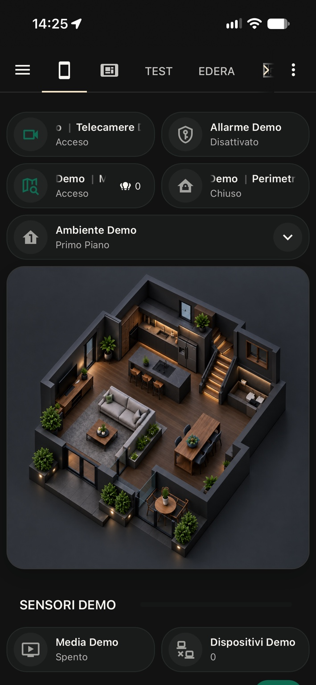
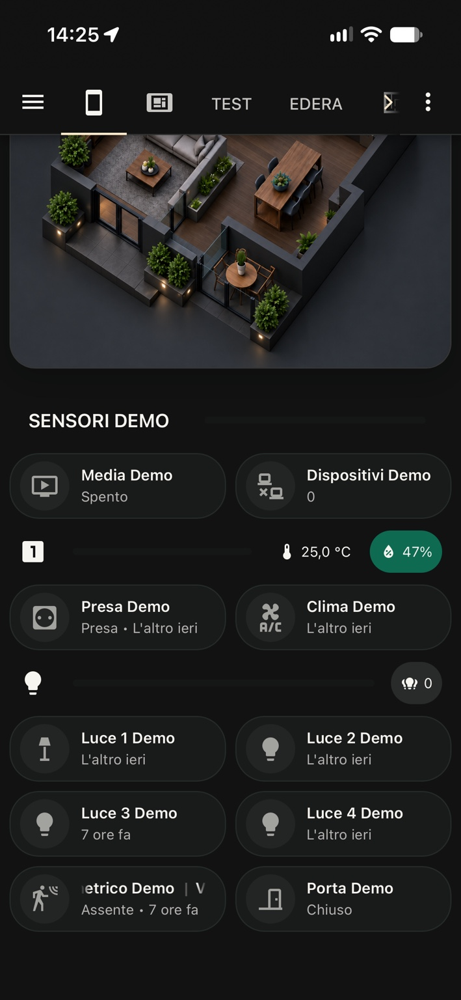

HOME ASSISTANT DASHBOARD
Home Mobile con tema Edera
Designed by Edera
La tua casa, a portata di mano.
Tutto quello che serve per gestire la casa in un’unica dashboard: piantina 3D, ambienti, luci, clima e sensori. Prova la Live Demo e scopri come portare Home Mobile nel tuo Home Assistant.
Scopri Home Mobile nella versione Graphite Dark. Con Edera puoi scegliere anche la modalità Light nel tuo Home Assistant.
AUTOMAZIONE 07 · OPZIONALE
La dashboard segue i tuoi movimenti.
Simula un sensore di movimento: l'ambiente selezionato cambia automaticamente, come nel blueprint per Home Assistant.
Ambiente selezionato: Primo Piano
Scopri l'automazione 07 ↗Questa prova simula il cambio ambiente. Nel tuo Home Assistant il blueprint aggiorna il selettore quando il sensore rileva movimento; non cambia pagina né accende lo schermo.
LIVE DEMO · DATI SIMULATI
Prova Home Mobile

Acceso Disattivato Acceso Chiuso Primo Piano 0
Spento Presa · L'altro ieri L'altro ieri L'altro ieri L'altro ieri 7 ore fa L'altro ieri Assente · 7 ore fa Chiuso 0La Live Demo utilizza dati simulati e non si collega ai dispositivi di casa o a un'istanza Home Assistant.